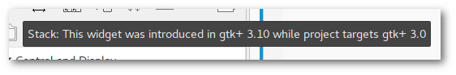

Das Geheimnis der Sphinx
Inhalt
Ob ich die Tutorial-Artikel nicht als E-Book zusammenfassen könnte, wurde ich gefragt. Ich kann.
Folgt mir auf meiner abenteuerlichen und actiongeladenen Reise, in dem mit Kanonen auf Spatzen geschossen wird und ich den Geheimnissen der rätselhaften Sphinx auf die Spur komme.

Vorüberlegungen
Die GitHub-Page läuft mit dem statischen Seitengenerator Nikola, die standardmäßig reStructuredText-Quelldateien parst. Da kommt ein Dokumentationstool, das diese ebenso verarbeiten kann und die Ausgabe in verschiedene Formate ermöglicht, absolut gelegen. All das bietet Sphinx.
Die naheliegende, sich aber möglicherweise als naiv herausstellende, Überlegung war nun, die bestehenden Blogartikelquelldateien so vorzubereiten, dass sich mit wenig Aufwand gewünschte Ausgabeformate immer wieder neu generieren lassen.
- Sphinx bietet die Builder für
- EPUB, dem offenen E-Book-Standard, nativ von allen E-Reader-Fabrikaten außer den Kindles unterstützt
- PDF, das per LaTeX (verschiedene Engines verfügbar) erzeugt wird
Sphinx
Initialisierung
Nach der Installation erstellt man das Projektverzeichnis und initialisiert mit
$ sphinx-quickstart
das Grundgerüst. Fast alle Fragen können auf der Voreinstellung belassen werden. Im Projektverzeichnis befindet sich nun die Konfigurationsdatei conf.py sowie das Root-Dokument index.rst.
Die Dateien lassen sich nach dem Muster make Builder erzeugen, die in den Unterverzeichnissen _build/builder befinden:
$ make epub $ make latexpdf
conf.py
Epub
#HTML-Dateien vor dem Inhalt der index.rst einfügen epub_pre_files = [('info.xhtml', 'Info')] html_additional_pages = {'info': 'info.html'} #Titel erzeugen epub_cover = ('_static/cover.png', 'epub-cover.html') #Stichwortverzeichnis auslassen epub_use_index = False #Bezeichnung der Ausgabedatei epub_basename = output_basename #für die Generierung der info.xhtml benötigt, da sonst None html_last_updated_fmt = '%d. %B %Y'
LaTeX
Für die PDF-Ausgabe müssen eine Reihe von TeXLive-Paketen installiert sein (siehe Dokumentation). Als Alternativen seien an dieser Stelle das in Calibre integrierte Konvertierungstool ebook-convert und epub2pdf genannt.
#Papierformat (Standard ist US-Letter), leere Seiten vermeiden latex_elements = { 'papersize': 'a4paper', 'classoptions': 'oneside,openany' } #Logo auf der Titelseite latex_logo = '_static/logo.png'
Sonstiges
- Pygments
- Syntax-Highlighting, ebenfalls von Nikola unterstützt, hier wie dort bevorzuge ich das Theme "borland".
- Bezeichnung der Ausgabedatei
- Der Dateiname lässt sich für die verschiedenen Builder jeweils festlegen. Um für alle verwendeten Builder jeweils die gleiche Bezeichnung zu nutzen, verwende ich hier die eigene Variable output_basename. Diese wird demzufolge nicht von Sphinx unterstützt und nur innerhalb der conf.py verwendet (in den Variablen htmlhelp_basename, latex_documents, texinfo_documents, epub_basename).
pygments_style = 'borland' output_basename = 'gladepytutorial'
_static
In diesem Ordner befinden sich Stylesheets, Bilder und Skripte, die nach den vorgegebenen Dateien geladen werden. So kann man lokale individuelle Stylesheet-Anpassungen vornehmen, ohne das Theme selbst zu modifizieren. Hier befinden sich eine angepasste pygments.css, cover.png (Epub) und logo.png (PDF).
_templates
Analog zu _static befinden sich hier individuelle Templates. Diese werden standardmäßig mit der Template-Engine Jinja2 betrieben. Hier befindet sich info.html, die in der Epub-Ausgabe Verwendung findet.
Epub: zusätzliche Dateien einfügen
Sphinx bietet mit epub_pre_files (und analog epub_post_files) die Option, zusätzliche und nicht zur eigentlichen Dokumentation gehörenden (X)HTML-Dateien zum Epub hinzuzufügen. Diese müssen allerdings zunächst als zusätzliche HTML-Seiten generiert werden. Dafür wird in der conf.py die Variable html_additional_pages entsprechend gesetzt [1].
| [1] | Es hat mich einen (EINEN!) Tag gekostet dies herauszufinden... |
index.rst
Dies ist das Hauptdokument, das von jedem Sphinx-Builder geparst wird. Die Bezeichnung wird in der conf.py in der Variable master_doc festgelegt.
Als reguläre reST-Datei kann sie beliebig viel Inhalt aufnehmen. Es ist allerdings zu empfehlen und im Normalfall vermutlich sowieso bereits der Fall, das Dokument in mehrere Dateien aufzuteilen. Sphinx stellt dafür die eigene toctree-Directive zur Verfügung.
.. toctree:: :maxdepth: 1 :numbered: :caption: Inhalt teildokument1 teildokument2 ...
Dateien außerhalb von toctree werden per include-Directive hinzugefügt.
Es ist auch möglich, Inhalte nur von bestimmten Buildern berücksichtigen zu lassen:
.. only:: latex .. include:: info.rst
Bonus: Mobi
"Ich habe doch einen Kindle und hätte auch gern so ein E-Book!"
Aber klar doch.
KindleGen
Amazon möchte zwar keine Epubs [2] unterstützen, aber sie bieten mit KindleGen ein Tool an, welches diese in die eigenen Formate (KF8, Mobi) überführt.
Auf diese Weise lässt sich mit
$ kindlegen input.epub
eine Mobi-Datei erzeugen.
| [2] | oder Google-Apps... |
Problem: Encoding
Das aus dem Epub erstellte E-Book im Mobi-Format hat ein Darstellungsproblem mit einigen (Sonder-)Zeichen.
Abhilfe schafft hier die Zeile
<meta http-equiv="Content-Type" content="text/html; charset=UTF-8" />
an Stelle von
<meta charset="utf-8" />
innerhalb des HTML-Heads. Sphinx bietet dafür die meta-Directive, die allerdings für jede Datei gesetzt werden muss:
.. meta:: :http-equiv=Content-Type: text/html; charset=UTF-8
Nikola
Das Resultat des ersten Durchlaufs von Sphinx mit der Übersichtsseite und drei Artikeln lässt vorsichtig optimistisch werden. Trotzdem gibt es an diversen Stellen Optimierungsbedarf:
-
Die Nikola-eigenen Kurzverweise (slug) funktionieren nicht und erfordern eine Konvertierung in ":ref:"erenz.
-
Die Artikelüberschrift ist kein Gliederungselement und fehlt demzufolge im Inhaltsverzeichnis
-
Nikola-eigene Directives verursachen Fehler. Konvertierung von
- thumbnail -> image
- listings -> literalinclude
-
relative Pfade in image-Directives anpassen
-
Inhaltsverzeichnisse in den Artikel überflüssig
-
"Kommentieren auf G+"-Button entfernen
-
Für die Generierung der Mobi-Datei muss jede Datei eine Meta-Anweisung erhalten
Für eine zufriedenstellende Ausgabe ist es also erforderlich, die Ausgangsdateien hinsichtlich dieser Punkte per Skript zu modifizieren.
Automatisierung
Das ist er, der Elefant im Raum.
Sphinx läuft und die index.rst ist eingerichtet. Die Mission besteht nun aus folgenden Teilaufgaben:
- Sphinx soll sich der aktuellen Dateien der GitHub-Page bedienen.
- Diese Dateien sollen gemäß der oben genannten Punkte bearbeitet werden.
- Sphinx soll ein Epub und ein PDF erzeugen.
- KindleGen soll ein Mobi erzeugen.
- Die Dateien sollen im entsprechenden Ordner im GitHub Page-Verzeichnis abgelegt und deployt werden.
Let's do this.
Skript
Die diffizile Arbeit ist bereits erledigt: die Einrichtung von Sphinx und die Problemerfassung. Das Skript selbst arbeitet nun die oben genannten Punkte ab. Weiterhin gibt es der Übersichtlichkeit halber zwei weitere Dateien. Es befinden sich nun im Sphinx-Projektverzeichnis folgende neue Dateien:
- nibook.py: sammelt, kopiert, bearbeitet die Quelldateien, erstellt die E-Books und füttert die GitHub-Page (Code)
- index.lst: Liste von Dateinamen (ohne Endung), die im Dokument enthalten sein sollen
übersicht artikel1 artikel2 artikel5
- index.tmpl: aus dieser und der index.lst wird die index.rst generiert
.. generated by nibook, posts will be inserted after ".. include-start" .. some text documentation master file, created by sphinx-quickstart on Thu Oct 26 20:26:54 2017. You can adapt this file completely to your liking, but it should at least contain the root `toctree` directive. .. meta:: :http-equiv=Content-Type: text/html; charset=UTF-8 .. only:: latex .. include:: info.rst **************************** Glade-Tutorial mit PyGObject **************************** .. toctree:: :maxdepth: 1 :numbered: :caption: Inhalt :name: mastertoc .. include-start

Neue Widgets in alten Glade-Dateien
Problem: deaktivierte Widgets in älteren Glade-Dateien
Es kann vorkommen, dass nach dem Öffnen einer Datei in Glade Widgets ausgegraut sind.

Per Tooltip wird dann zum Beispiel angezeigt:
{kind=link}
Die Ursache liegt in der angegebenen Gtk+-Version gleich am Anfang der Glade-Datei:
<?xml version="1.0" encoding="UTF-8"?> <!-- Generated with glade 3.20.1 --> <interface> <requires lib="gtk+" version="3.0"/> ...
Dieses Zeile wird auch beim neuerlichen Speichern mit einer aktuellen Glade-Version nicht verändert. Abhilfe kann hier ganz simpel geschaffen werden, indem "3.0" durch eine aktuellere Version ersetzt wird (derzeit "3.20").
BeeLine - weiterfahren lohnt sich
Inhalt
Der Navigationskompass BeeLine im weiteren Test
Dies ist die Fortsetzung zu meinem einführenden Artikel zu BeeLine.
It's alive!
BeeLine lebt. Es gibt tolle Fortschritte bei der Entwicklung. Fast könnte man meinen, sie hätten meinen ersten Artikel dazu gelesen, denn die unter "Verbesserungspotential" aufgezählten Punkte wurden nahezu vollständig umgesetzt.
Ein weiterer positiver Punkt bei BeeLine ist die Kommunikation. Einer direkten Ansprache über Twitter wegen konkreter Probleme/Bugs folgte ein weiterer Austausch per Mail mit der Aussicht auf baldige Problembehebung. Am selben Tag.
Es mag seltsam klingen, aber es wirkt sich durchaus positiv auf die Einstellung gegenüber Firmen und Produkten aus, wenn man den Leuten den Eindruck verschafft, dass dahinter tatsächlich Menschen stecken...(ja, ich schaue dich an, Google).
Verbesserungen
Die vier großen Kritikpunkte aus meinem ersten Artikel sind:
- fehlende Praktikabilität in der Handhabung von Wegpunkten
- versehentliche Beendigung von Fahrten
- undurchsichtige Belegung der Bedienelemente
- Wunsch nach besserer Routenfunktionalität (Import)
Wegpunkte
Manuelles Blättern
Durch die Wegpunkte einer Route lässt sich nun mit den N/S-Tasten blättern. Ein Druck auf die obere Taste blättert weiter, die untere zurück. Gelangt man an den letzten Wegpunkt, wird nach Bestätigung der Frage "Finished?" die Fahrt beendet.
An welchem Wegpunkt man sich befindet, sieht man auch weiterhin nicht auf dem BeeLine, wohl aber in der App.

App: Wegpunkteanzeige
Automatische Wegpunkteführung
In den Einstellungen lässt sich unter "Automatic Waypoint" einstellen, dass beim Passieren eines Wegpunktes automatisch der nächste angewählt wird.
Der nächste Wegpunkt wird aktiviert, wenn man sich weniger als 100 Meter dem aktuellen Wegpunkt nähert. Bleibt man weiter weg oder entfernt sich wieder, fährt zum Beispiel weit um einen Wegpunkt herum, bleibt BeeLine immer auf diesen aktivierten Wegpunkt fixiert, auch wenn bereits andere Wegpunkte näher sind.
Bei automatischer Wegpunktführung kann man aber weiterhin manuell per Tasten durch die Wegpunkte scrollen.
Diese Funktion halte ich für ein absolutes Killerfeature, denn es präzisiert die Routenführung, bleibt aber dabei unaufdringlich.
Belegung der Bedienelemente
Wie bereits erwähnt, blättert man mit der oberen und unteren Taste durch die Wegpunkte. Ein längerer Druck auf die untere Taste schaltet die integrierte Beleuchtung an oder ab. Die Tasten rechts und links blättern jeweils durch folgende Anzeigen:
Kompass <-> Geschwindigkeit <-> Uhrzeit <-> Akkuladezustand (Phone und BeeLine) <-> Kompass
Es ist mir auch nicht mehr passiert, Fahrten unbeabsichtigt beendet zu haben. Dieses Problem (Punkt 2), ob nun Bedienfehler oder tatsächlich Bug, scheint sich also auch erledigt zu haben.
Routenimport (whoop, whoop)
Eine Route lässt sich nun nicht mehr nur direkt in der BeeLine-App erstellen, sondern auch als GPX-Datei importieren. Dabei wird der Track vereinfacht und (größere) Richtungsänderungen mit Wegpunkten markiert. Die Strecken zwischen den Wegpunkten sind immer in Luftlinie (beeline) dargestellt.

Links: importierte vereinfachte Route mit Wegpunkten. Rechts: Anzeige des GPS-Tracks in Locus-App
Anhand der Screenshots sieht man, dass das ziemlich gut funktioniert. So kann man für relevante Streckendetails (wichtige Richtungsänderungen an Kreuzungen, Brücken) Wegpunkte setzen, ohne komplett auf eine bestimmte Streckenführung fixiert zu sein oder auf der anderen Seite in Sackgassen zu landen.

Wenige Wegpunkte reichen zur Skizzierung der Strecke aus
Wünsch dir was
Ich möchte an dieser Stelle nicht in den Verdacht geraten, dass dies ein gekaufter Artikel sei, also habe ich natürlich auch wieder eine Rubrik für Kritik reserviert. Also dann:
Routen in umgekehrter Reihenfolge abfahren
Eine Option, die Richtung einer Route zu bestimmen, wäre praktisch.
Wegpunkte-Fortschritt
Es wäre cool, wenn wie in der App angezeigt würde, auf welchen Wegpunkt man sich gerade zubewegt. Ja, ich weiß, dass dies nichts über Entfernungen aussagt.
Fahrt pausieren
Eine Funktion zum Pausieren, aber nicht Beenden der Fahrt könnte sowohl bei größeren Touren (Fortsetzen an letztem Wegpunkt) als auch beim spontanen Stopp am Supermarkt (tatsächliche Durchschnittsgeschwindigkeit) hilfreich.
Kalibrierung
Wir hassen es alle: das Hufeisensymbol auf dem BeeLine - Lenker rechts, Lenker links, Vorderrad hoch und das Ganze noch einmal. Mit dem Rennrad eine Kleinigkeit, mit Gepäck am Tourenrad eine Qual.
Ich habe dazu keinen wirklich konstruktiven Vorschlag. Vielleicht reichte es ja bereits aus, die Empfindlichkeitsschwelle zu erhöhen, denn häufig erscheint das Symbol auch während der Fahrt und verschwindet dann nach kurzer Zeit wieder. Ich ignoriere es inzwischen weitgehend.
Me vs. me
- Ich fahre häufig die selben Routen.
- Jeder mag Statistiken.
Ich hätte gern eine Übersicht, wie häufig ich Routen gefahren bin, wie weit und lange und schnell ich dabei unterwegs war.
Fazit
BeeLine hat sich sehr postitiv entwickelt und ich werde es wieder häufiger benutzen. Die Ausweitung der Funktionalität rund um Routen - erstellen, importieren, speichern, Wegpunkteführung - macht das Gerät inzwischen zu einem interessanten Tool und mehr als einem bloßem Spielzeug.
Da BeeLine aber auf die Verbindung mit einem Smartphone angewiesen ist, das Standortfunktion und Bluetooth bereitstellt, ist es kein Ersatz für ein Standalone-Navigationsgerät. Bei längeren Fahrten muss man auf jeden Fall den Akkuverbrauch berücksichtigen. Powerbanks existieren.
Kommentieren auf
Stacks und Notebooks
Inhalte organisiert anzeigen
Gtk.Stack und Gtk.Notebook sind Layout-Container, die ihrerseits beliebige Widgets enthalten können.
Ein Notebook stellt ein mehrseitiges Layout mit klassischer Tab-Funktionalität zur Verfügung. Stacks bieten die gleiche Grundfunktionalität, nämlich mehrere Container innerhalb eines Widgets zu enthalten, zwischen denen man hin- und herschalten kann.
Der Hauptunterschied besteht darin, dass das Bedienelement des Stacks als separates Widget verwendet werden muss (Gtk.StackSwitcher). Verschiedene Stackswitcher können dabei auf den selben Stack zugreifen. Weiterhin lassen sich Stackswitcher in Headerbars platzieren, außerdem werden animierte Überblenden zwischen den Stack-Seiten unterstützt.
Stacks passen sich subjektiv besser in die GNOME-Umgebung ein, bieten aber nicht ganz so große Funktionalität wie Notebooks.
Das Beispiel enhält ein Fenster mit Stack, in dessen dritter Seite ein Notebook enthalten ist, das verschiedene Webseiten anzeigt.

Glade
Stack
Ein Stack, zu finden in der Sidebar unter "Container", und dessen Unterseiten lassen sich einfach in Glade erstellen und bearbeiten. Als Unterwidgets kommen im Beispiel Gtk.Image, Vte.Terminal und Gtk.Notebook zum Einsatz.
Das Stackswitcher-Widget befindet sich unter "Steuerung und Anzeige" und wird der Headerbar hinzugefügt. Es kann aber auch in reguläre Container-Widgets wie einer Box platziert und die Unterseiten horizontal oder vertikal angezeigt werden. Unter "Allgemein > Stapel" wird der Stack ausgewählt, auf den sich das Widget beziehen soll. Die anzuzeigende Seitenbezeichnung wird im jeweiligen Stack-Unterwidget unter "Packen > Titel" festgelegt. Dies funktioniert aber erst, nachdem einer Unterseite ein Widget hinzugefügt wurde. Standardmäßig ist dies zunächst leer.
Notebook
Das Notebook findet sich ebenfalls unter "Container". Die Steuerungseinheit des Tabs ist ein bei Erstellung einer Seite generiertes Label-Child-Widget. Als Container-Widgets der Unterseiten werden hier Gtk.ScrolledWindows verwendet. Diese benötigt man auch z.B. für die Anzeige von (längeren) Tabellen (siehe auch Artikel zu List-/TreeStores Nr. 1 und Nr. 2).
Die Tab-Leiste des Notebooks bietet die Möglichkeit, sowohl am Anfang als auch am Ende ein Container-Widget bereitzustellen (unter "Allgemein > Start-Aktion/End-Aktion"), in dem zum Beispiel feste Buttons untergebracht werden können. Im Beispiel wird am Anfang ein "Home"-Button eingerichtet.
Python
Für das Umherschalten zwischen Stack-Unterseiten und Notebook-Tabs werden keine Signale benötigt. Im Beispiel werden nur zwei Signale benötigt, einmal für das Abfangen des "exit"-Kommandos innerhalb des Terminals und für den Button in der Notebook-Tableiste.
WebKit2
Die Darstellung von Webseiten wird im Beispiel von WebKit2 erledigt. Das zentrale Modul dabei ist WebKit2.WebView. Ein neues WebView-Objekt selbst ist bereits ein scrollbares Gtk+-Widget in einem Gtk.Viewport, muss also laut API-Referenz nicht mehr in ein Gtk.ScrolledWindow platziert werden. Dies funktionierte im Test zwar für Gtk.Stack, nicht aber für Gtk.Notebook, weshalb dort trotzdem als "Unterlage" ein ScrolledWindow-Widget verwendet wird.
Das WebView-Widget wird nach folgendem Muster erstellt:
#create new WebView widget webview = WebKit2.WebView() #send URL to widget webview.load_uri("http://google.com") #add webview to notebook notebook.add(webview) #add webview to stack stack.add_titled(webview, name, "StackSwitcher title") webview.show()
NoN: Konsoledierung
Knights of Ni - jetzt wird's schick
Einmal eingerichtet, benötigt man für das Befeuern einer Nikola-angetriebenen Seite nur einen Dateimanager, einen Editor, ein Terminal und normalerweise zwei Kommandos.
Und weil ich es gern bequem habe, habe ich mir etwas Unterstützung dafür gebastelt.
Was bisher geschah
Die per Button aufgerufenen Nikola-Kommandos wurden bisher folgendermaßen verarbeitet:
- nikola build lief im Hintergrund als subprocess.run(cmd)
- nikola github_deploy wurde im separaten Terminalfenster ausgeführt; dieses wurde nach der erfolgreichen Ausführung wieder geschlossen
Und das soll jetzt alles vorbei sein?
Neu ist immer besser.
—Barney Stinson
Die Oberfläche ist nun per Gtk.Stack zweigeteilt. Per Gtk.StackSwitcher in der Headerbar lässt sich zwischen der normalen Oberfläche und einem Terminal hin- und herwechseln.
Dies hat mehrere Eigenschaften und Vorteile:
- Das Teminal öffnet sich im aktuellen Verzeichnis der Nikola-Instanz.
- Das Terminal kann beliebig verwendet werden.
- Beim exit wird es nur resettet.
- build und github_deploy werden in diesem Terminal ausgeführt, wenn sie über die Oberfläche (Buttons) gestartet werden.
- Beim Ausführen über die Buttons wechselt der Focus auf das Terminal und nach Beenden des Tasks wieder zurück zur Oberfläche. Mit super Überblende (aktivierte Animationen erforderlich)!
- Optisch aufgeräumter, da kein separates Fenster mehr benötigt wird.